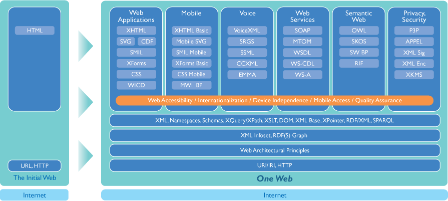
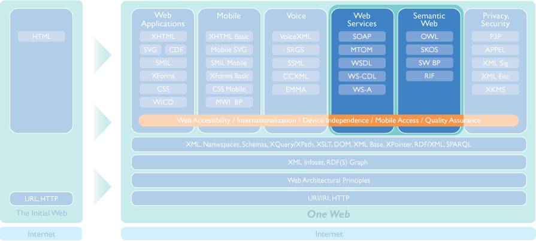
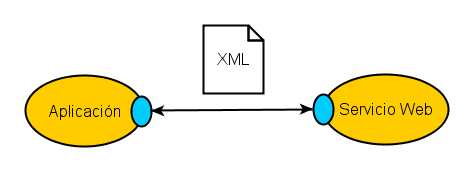
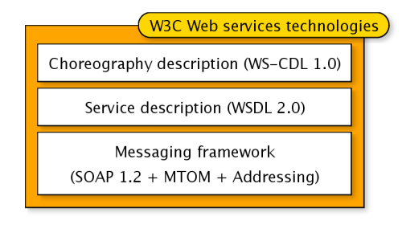
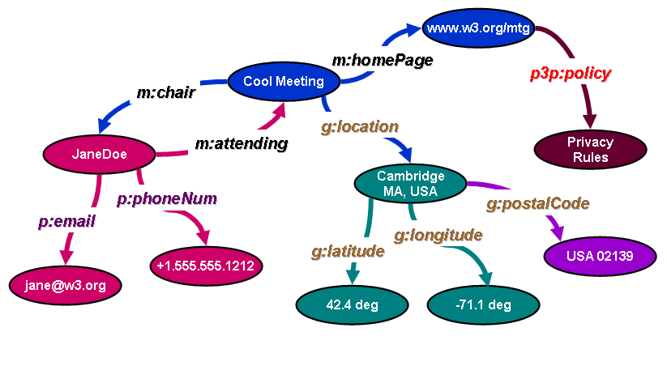
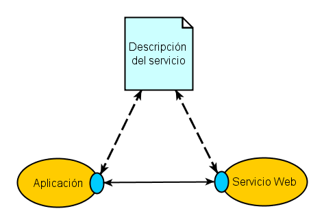

Organizado por Club BPM
20 y 21 de Febrero de 2006
Centro de Congresos Príncipe Felipe, Hotel Auditorium (Madrid)




Information Management: A
Proposal, Tim Berners-Lee, CERN, March 1989, May 1990
El Usuario consulta documentos (texto e imágenes)
Las aplicaciones empresariales, se basan en servicios:
Se busca una interoperabilidad entre distintos sistemas
The need for Web Services standards is becoming
more and more important as we automate the use of so many Web services
applications
Tim Berners-Lee, Director del W3C


Although differing terminology is used in the industry, such as orchestration, collaboration, coordination, conversations, etc., the terms all share a common characteristic of describing linkages and usage patterns between Web services. We use the term choreography as a label to denote this space.
En abril de 2001, en un workshop de W3C sobre Servicios Web, se llevaron a cabo varias presentaciones que apuntaban la necesidad de crear y utilizar un lenguaje común para definir esta coreografía entre servicios web.
Hay muchas otras organizaciones trabajando sobre el área de lenguajes de coreografía, lo que denota el gran interés de la industria sobre este tema:
WS-Security
WS-Secure Conversation
WS-Security Policy
...



W3C
Workshop on Web of Services for Enterprise Computing
(WSEC)
27 y 28 de febrero de 2007 (Bedford, Massachusetts)
Objetivos:
Resultados y conclusiones
Temas que se plantean
Participantes:
Preocupación en la Administración ante la falta de interoperabilidad
Existe voluntad e interés general por el uso de los estándares abiertos
European W3C Symposium on eGovernment
Más información:

{kind=link}